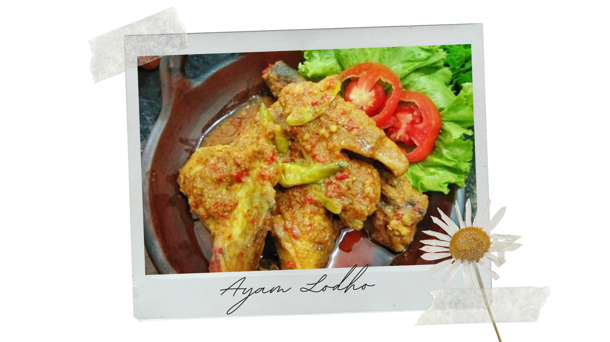
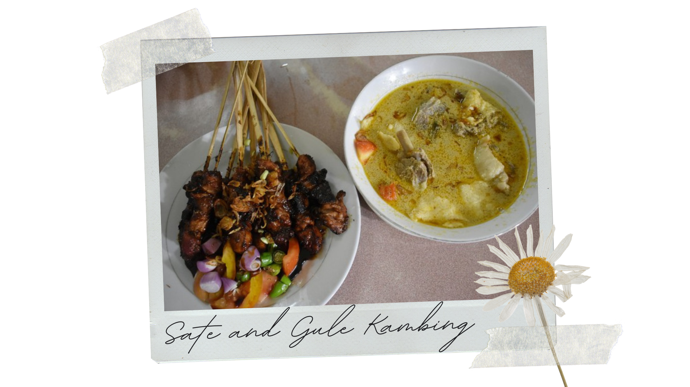
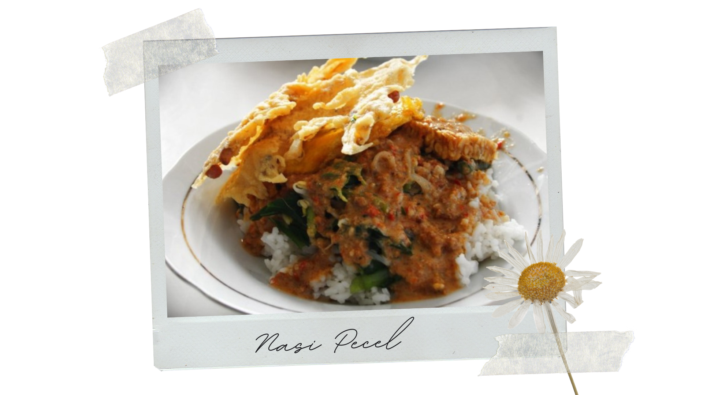
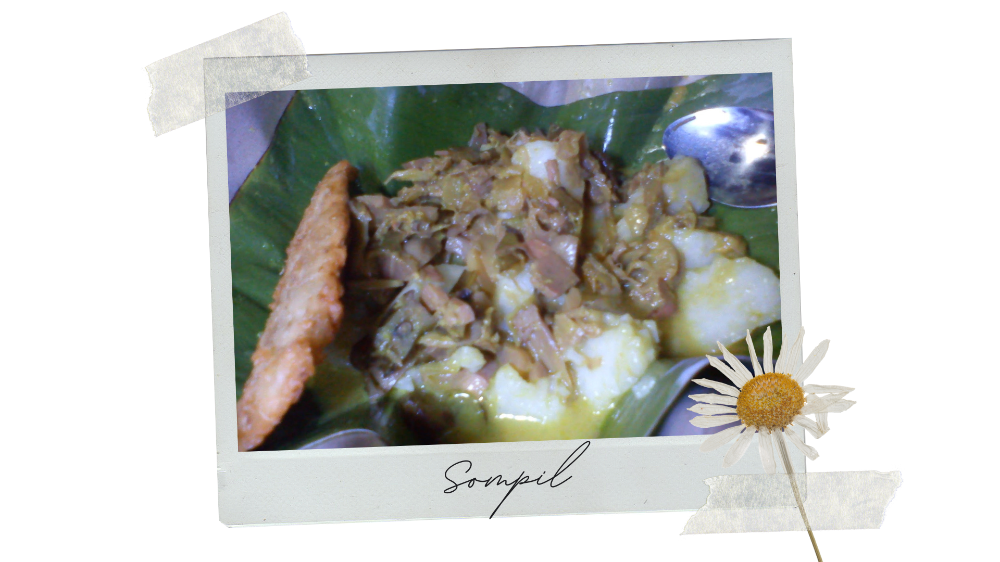
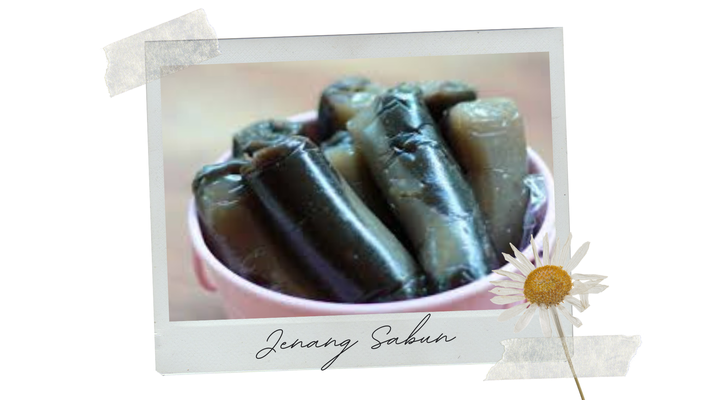

L O C A L F O O D S
1. Ayam Lodho

Ayam Lodho is one of the most popular Tulungagung's local foods. Ayam means chicken and lodho is a way of cooking.
Basically twice cooked chicken meat covered in spices and coconut milk until the sauce is thickened.
It's almost similar to Chicken Curry but with special smoked flavor of the chicken along with super spicy taste and you need to smoke the chicken first.
The local communities here like to add some 'kencur' or galangal for the curry. Lemongrass, ginger, bay leaf, and turmeric are the most needed ingredients to add the spicy flavor.
You could find the food almost on every local food .
2. Sate and Gule Kambing

Sate and gule kambing are also commonly found in Tulungagung. Sate kambing or mutton satay are grilled after been dipped in gule
(spicy thick goat meat and offal soup). A set meal of sate and gule kambing usually consists of the mutton satay itself,
commonly served in a thick black-coloured sauce made of kecap manis or sweet soy sauce, and a bowl of gule. We can also have rice or cubed rice (lontong) with it.
3. Nasi Pecel

Nasi pecel is common Javanese food. it's a rice dish served with cooked vegetables and peanut sauce, not to forget the traditional cracker (peyek).
Nasi pecel here can be found right in the morning or even at night.
4. Sompil

Sompil here is known for its spiciness. The dish consists of cubed rice (lontong), cooked vegetables (mostly long beans or bamboo roots), with extra spicy peanut sauce.
This dish is usually served with banana leaves as its plate.
5. Jenang Sabun

Based on its name, jenang sabun is one type of jenang or dodol (sweet toffee-like sugar palm-based confection) that slippery when eaten like sabun (soap),
even though it's not made from soap.
---
There are still so many more local foods here such as cenil, kicak, cethe coffee, rambak crackers, gethuk, getri, pisang ledre etc.